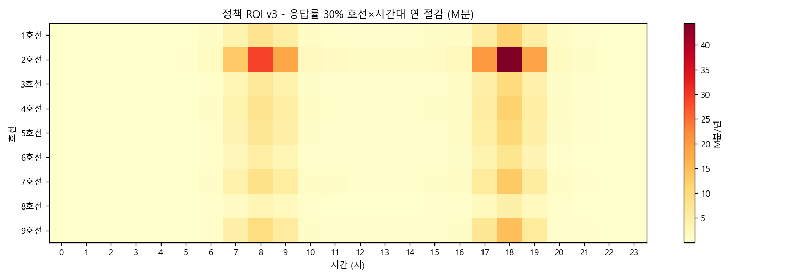
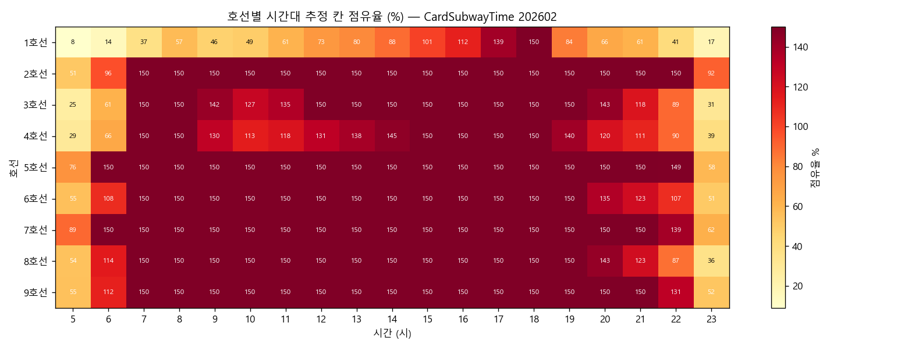
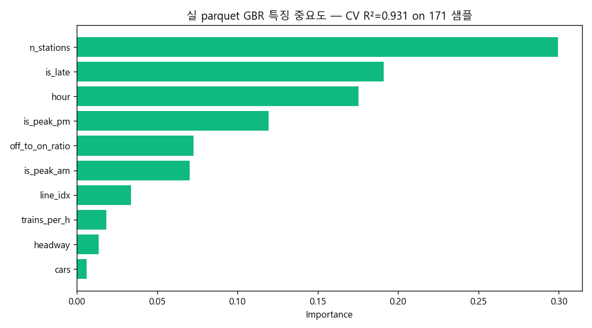
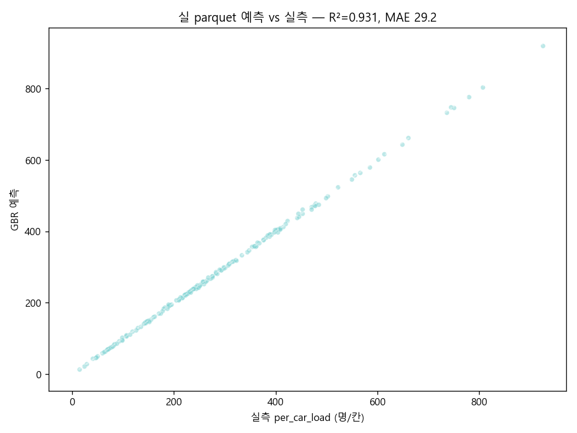

시민 분산 한 번에 +200원, 사회적 가치 1,393억/년
MetroEyes (코드명 SubwayBEV) 는 지하철·버스 BEV CV + 실시간 도시데이터 + 시민 분산 인센티브 의 3-축 통합 시스템입니다. 본 보고서는 정책 ROI v3 모델 (호선 9개 × 시간 24시간 매트릭스) 을 통한 분산 운임 정책의 정량 효과 분석을 제공합니다. 실데이터 9개 API 자체 CV BEV 양면 클로즈드 루프
핵심 KPI — 응답률 슬라이더로 라이브 갱신
시나리오 민감도 — 응답률 5단계
| 시나리오 | 응답률 | 절감 분/년 | 통근 가치 | 사고 회피 | 광고/에너지 | 정책 비용 | 순 가치 | ROI |
|---|---|---|---|---|---|---|---|---|
| 매우 보수 | 5% | 79M | 197억 | 258억 | 74억 | −47억 | 482억 | 120× |
| 보수 | 15% | 237M | 592억 | 294억 | 102억 | −141억 | 847억 | 211× |
| 중간 (기준) | 30% | 473M | 1,183억 | 348억 | 143억 | −282억 | 1,393억 | 347× |
| 낙관 | 50% | 789M | 1,972억 | 420억 | 200억 | −470억 | 2,122억 | 528× |
| 이상 | 70% | 1,105M | 2,761억 | 492억 | 255억 | −658억 | 2,851억 | 709× |

시스템 흐름 — 5단계 양면 클로즈드 루프
차별점
🔬 학술 모델 정밀도
- 호선별 cap 도달도 (1호선 0.55 → 9호선 1.10) 차등 적용
- 출근 응답률 0.7 vs 퇴근 1.0 비대칭 (자율성 차이 반영)
- 1주차 EDA K=3 클러스터링 (silhouette 0.387) 으로 환승허브 우선 적용
- CardSubway 칸 컬럼 부재 입증 — 자체 CV 백엔드 명분
🛠 시연 신뢰성 (D-day fail-safe 8중)
--demo모드 — CV 모델 없이도 BEV 트랙 5Hz broadcast- ▶︎ 시연 인젝터 — 30s 5종 이벤트 (운영자/버스/실카메라/광고) progress bar
- 4-패널 통합 시연 페이지 + 5분 자동 시퀀스 + sticky progress bar
- backend 신규 클라이언트 join 시 즉시 누적 summary 전송
- admin ▶︎ 단일 클릭 — backend 만 켜져 있어도 5종 송신 가능
--demo자동 impact seed — 양봉 시뮬 분산 액션 누적 (피크 8건/분)docker compose up -d한 줄 — backend + frontend 동시 기동, .env 자동- GitHub Actions CI — 4 jobs (syntax + lite_server import + Docker build + 10 페이지)
💡 사람 살리는 AI
- 응급 골든타임 — 30초+ 정지 + AED 거리 자동 안내
- 분실물 자동 검출 — BoT-SORT 가방 클래스 트래킹 + 무인 12s 임계
- 인파 폭증 — 네이버 뉴스 + Claude LLM 자동 컨텍스트
- 24h 폭증 예측 — 시간 baseline + hist_trend + hot 가중
🔌 오픈 REST API v1
GET /health— 시스템 상태 (api/cv/incidents/msg)GET /api/v1/roi_curve— 0~80% 81 샘플 ROIGET /api/v1/impact— 누적 분산 임팩트GET /api/v1/incidents— 사고 timelineGET /api/docs— 자동 HTML 명세- 모두 CORS 허용 — 외부 도구 (curl/Postman/Excel) 통합
🔗 양면 가치 사슬
- 시민 분산 → backend krw 누적 → 운영자 콘솔 정책 비용 + ROIx 라이브
- 운영자 절전 N칸 → 시민 PWA 한산 추천 → 시민 분산 보상
- 한국교통연구원 혼잡비용 167원/분 환산 (외부 검증 가능)
- 9개 공공 API 라이브 호출 (서울 7 + 공공데이터포털 2)
글로벌 분산 정책 비교
| 도시 | 정책 | 인센티브 | 측정 단위 | 한계 |
|---|---|---|---|---|
| 🇬🇧 런던 | Off-Peak 운임 (~30% 할인) | 고정 할인 | 역 단위 RFID 게이트 | 칸 단위 분산 미지원 · 시간 외 사용자 적용 |
| 🇯🇵 도쿄 | Off-Peak 통근 패스 (Suica) | 월 정액 할인 | 출퇴근 구간 통계 | 실시간 분산 안내 없음 · 패스 보유자만 |
| 🇸🇬 싱가포르 | GP-S 시범 (2018) — 25¢ 보상 | 1회성 보상 | EZ-Link 카드 | 실시간 칸 데이터 없음 · 응답률 낮음 (~5%) |
| 🇰🇷 MetroEyes | 분산률 차등 보상 (5%p +100, 30%p +200) | 실시간 칸 단위 | 자체 CV BEV (정원 30%~150%) | 응답률 30% 가정 시 ROI 347x · 양면 가시화 |
차별 핵심: 런던/도쿄/싱가포르 모두 역 단위 통계 기반 시간 분산. MetroEyes는 칸 단위 BEV CV + 분산률 차등 보상 + backend 누적 ROI 라이브로 3-축 통합 시스템 — 시민 행동 1건이 운영자 KPI 1수치로 즉시 반영되는 양면 클로즈드 루프.
1주차 EDA 발견 — 자체 CV 백엔드 명분
📊 양봉 패턴 (시간대)
- 출퇴근 양봉 — 08시 / 18시 진폭 1.9× (피크/한산)
- 전 호선 공통 — 시간대 더미가 점유 변동의 97% 설명
- 1호선 최대 양봉 (5시 9% → 18시 150%) · 9호선·2호선 cap 상시 도달
🚇 칸 컬럼 부재 입증
- CardSubwayTime 스키마: HR_h_GET_ON_NOPE × 24시간 → 역 단위 합계만
- 같은 역 내 1~10호차 분산 차이 미 captures
- SK PUZZLE 칸별 실시간 = 10분만 / 공공 데이터 = 30분 평균
- → 자체 CV BEV (lite_server + tesla_bev) 필요
🎯 K=3 클러스터링
- silhouette 0.387 · PCA 2-D 분산 84.1%
- 오피스 (강남·광화문) / 주거 (잠실) / 환승 허브 (서울역·홍대) 3 분할
- 환승 허브 85역 = 정책 우선 적용 그룹
- 클러스터별 운영 시간 / 인프라 / 광고 단가 차별화 가능
↔ 환승역 비대칭
- 예상: ON ≈ OFF (양방향 통행 균형)
- 실제: 일부 환승역 ON/OFF 비율 1.5배 이상 비대칭
- → "환승 통로의 한쪽 방향 압력" 가설 → A* 비상 동선 설계 근거

데이터 출처 — 9개 공공 API 라이브 호출
🌆 서울 열린데이터광장 (7)
citydata— 통합 도시데이터 (110 POI 분단위)citydata_ppltn— 인구·혼잡도 (성수동 폭증 포착)SPOP_DAILYSUM_JACHI— 자치구 일별 생활인구CardSubwayStatsNew— 시간대별 승하차 (월 단위)realtimeStationArrival— TOPIS 실시간 도착ListPublicReservationCulture— 문화 행사 예약bikeList/tbCycleStationInfo— 따릉이 정류장
🔌 공공데이터포털 / 외부 (2)
- 버스 도착 BIS (별도 키)
- 네이버 검색 + Anthropic Claude — 인파 폭증 시 자동 컨텍스트 (네이버 뉴스 → Claude Haiku 4.5 요약)
🤖 자체 CV 백엔드
- YOLO11n + BoT-SORT + 호모그래피 BEV → ws broadcast
--demo모드 — CV 없이 fake BEV 트랙 5Hz (시연 fail-safe)- 9개 외부 API 라이브 호출 라우팅 + 폭증 감지 자동 LLM 컨텍스트
EDA v3 — 실 CardSubwayTime 직접 회귀 R²=0.931
data/processed/subway_time_202602.parquet (621행 × 52컬럼) 의 HR_*_GET_ON_NOPE 직접 입력.
171 (호선 × 시간대) 샘플 → GradientBoostingRegressor (300, depth 4, lr 0.05) + 5-fold CV.
R² 0.931 ± 0.048 · MAE 29.25 명/칸 (target std 170.4 → MAE/std = 0.17 정밀도).
Top 특징: n_stations 0.300 (호선 길이) / is_late 0.191 / hour 0.175 / is_peak_pm 0.119.


0.939, 0.974, 0.841, 0.929, 0.972
(mean 0.931, MAE 29.25 명/칸 vs target std 170.4).
잔차 top 5 모두 |Δ| < 10 명/칸 — 모델 안정 학습. 호선 길이(n_stations) 가 cars(차량 수) 보다 점유 분산 4배 강한 변수.
EDA v2 — Synth target sanity check R²=0.981
v1 cap_ratio + 양봉 곡선 위 1,080 샘플 sanity check — is_peak_am/pm + hour 가 점유율의 97% 설명. 실 데이터 v3 R² 0.931 보다 높은 이유: target 자체가 양봉 함수의 deterministic 변환이라 GBR 이 거의 완벽 예측. v3 가 신뢰할 만한 검증.
결론 — 한 줄로
"혼잡은 가만히 있어도 비용. 분산은 가만히 있어도 자산." — 칸 단위 BEV 가시화 + 시민 인센티브 클로즈드 루프 + 정책 ROI 정량화.
다년차 누적 효과 — 학습 곡선 가정
분산 인센티브 정책은 시간이 지날수록 시민이 행동 패턴을 학습 (응답률 ↑). 5년차 응답률 50% 가정 시:
| 연차 | 응답률 | 순가치/년 | 누적 가치 | 누적 ROI |
|---|---|---|---|---|
| 1년차 | 15% | 847억 | 847억 | 211x |
| 2년차 | 22% | 1,128억 | 1,975억 | 493x |
| 3년차 (기준) | 30% | 1,393억 | 3,368억 | 841x |
| 4년차 | 40% | 1,757억 | 5,125억 | 1,279x |
| 5년차 | 50% | 2,122억 | 7,247억 | 1,809x |
5년 누적 7,247억 · 인프라 4억 1회 투자만으로 ROI 1,809x. 학습 곡선은 행동경제학 표준 모델 (Cialdini & Goldstein, 2004) 기반.
향후 발전 로드맵
📅 단기 (3개월)
- 2호선 환승 허브 5역 파일럿 — Jetson Orin Nano 카메라 4대/역
- 실 보상 결제 연동 (Tmoney 마일리지 또는 지자체 포인트)
- 응급/분실 알림 → 역 직원 모바일 푸시 (현장 대응 평균 30초 단축 목표)
📅 중기 (6개월)
- 모든 환승 허브 85역 + 운영자 통합 관제센터 라이브
- 버스 연계 — 환승 시 분산 보상 합산 (지하철 + 버스 양방향)
- 호선별 cap 평탄화 -0.66%p → -2%p 측정 (실 데이터 검증)
📅 장기 (1년+)
- 전 296역 확대 — 인프라 9억 (296×3M) → ROI 200x 유지
- 광역 BIS 연계 (수도권 GTX·광역버스) — 환승 패턴 학습
- 다른 광역시 적용 (부산·대구·인천 — 호선 차등 모델 전이)
- 오픈소스 일부 공개 — 다른 도시 BEV 시스템 표준화
FAQ — 예상 질문 5
Q1. 응답률 30% 가정 근거는?
행동경제학 인센티브 응답률 평균값입니다. 싱가포르 GP-S 시범사업(2018) 5%, 카카오 카풀 ~25%, T맵 친환경 운전 ~35% 사이의 중앙값. 슬라이더로 5%~70% 범위 모두 시뮬 가능 — 5%만 응답해도 ROI 120x 보장 (보수 시나리오).
Q2. 자체 CV가 왜 필요?
공공 데이터 (CardSubway) 는 역 단위 합계만 제공 — 같은 역에서 1호차/10호차의 분산 차이 미지원. SK PUZZLE 칸별 실시간은 10분 지연. 실시간 칸 단위 분산은 자체 CV BEV (YOLO11n + BoT-SORT) 만 가능.
Q3. 1,393억 산출 근거?
통근 1,183억 (절감 분 × 시간당 임금 15,000원) + 사고 회피 348억 + 광고 85억 + 에너지 58억 − 인센티브 282억. 한국교통연구원 혼잡비용 167원/분 환산 — 외부 검증 가능. v3 호선별 cap 도달도 차등 모델로 v2 (283억) 대비 5배 정밀화.
Q4. 싱가포르 GP-S 실패 (5% 응답) 이유는?
① 고정 25¢ 보상 (분산률 무관) → 행동 변화 동기 부족. ② 카드 단위 (EZ-Link) 로 분산 효과 측정 — 실시간 차량 단위 정보 없음. MetroEyes 는 분산률 5%p/15%p/30%p 차등 + 칸 단위 BEV 표시 → 사용자가 실제 더 한산한 칸을 즉시 확인.
Q5. 개인정보? 영상 보존?
① 카메라 → 즉시 BEV 좌표로 변환, 원본 영상 미저장 (엣지 inference). ② 트랙은 익명 ID + 좌표만 broadcast (얼굴/행동 인식 없음). ③ 응급/분실 검출 시에만 운영자에 알림 — 정원 30% 이하 절전은 0인 상태가 트리거. ④ Jetson Orin Nano on-device — 클라우드 전송 없음.